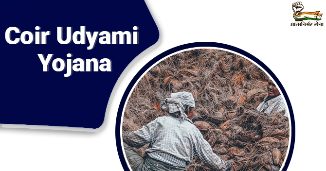
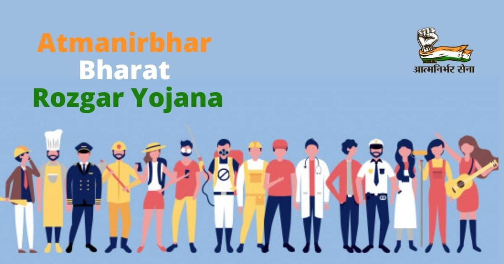
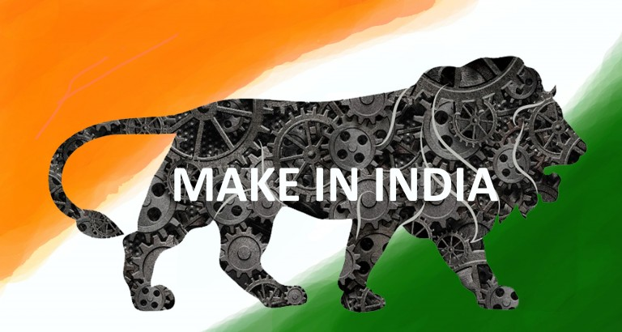

Coir Udyami Yojana
Coir Udyami Yojana is a scheme administered by the Ministry of Micro, small and medium enterprises. The coir board implements the scheme under the Ministry of MSME. The plan aims to develop the coir-related industry’s sustainable development and is under the ambit of MSME. However, the maximum permissible project cost is limited to INR 10 lakhs, which shall not exceed 25% of the project cost. The banks shall consider a composite loan instead of the term loan to cater to working capital requirements, which should be exclusive of the Rs.10 lakhs limit proposed. The start-up businessmen who are interested in establishing the coir manufacturing unit can avail of the benefit of this scheme. They can also apply to any coir board of the state or designated institute by the coir board.
Atmanirbhar Bharat Rozgar Yojana
Atmanirbhar Bharat Rozgar Yojana is the relief announced amidst the coronavirus pandemic. Job loss and unemployment are the most severe immediate impact of the COVID-19 crisis, while lower economic growth and a rise in inequality would be its long-term effects. As per the recent survey, the primary policy priorities were protecting workers and their families, short-term employment creation, and income transfers to affected society sections. Short-term policy requirements were to support MSMEs, expansion of MGNREGA, job creation, cash transfers, and social security. The long-term measures included the need for building a more robust public health system, universalization of social security, and policies for the welfare and rights of migrants, workers, other indigenous families.
Make in India
The Make in India initiative was launched by Prime Minister in September 2014 as part of a wider set of nation-building initiatives. Devised to transform India into a global design and manufacturing hub, Make in India was a timely response to a critical situation. By 2013, the much-hyped emerging markets bubble had burst, and India’s growth rate had fallen to its lowest level in a decade. The promise of the BRICS Nations (Brazil, Russia, India, China and South Africa) had faded, and India was tagged as one of the so-called ‘Fragile Five’. Global investors debated whether the world’s largest democracy was a risk or an opportunity. India’s 1.2 billion citizens questioned whether India was too big to succeed or too big to fail. India was on the brink of severe economic failure, desperately in need of a big push.
